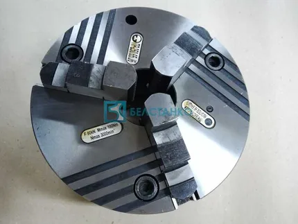
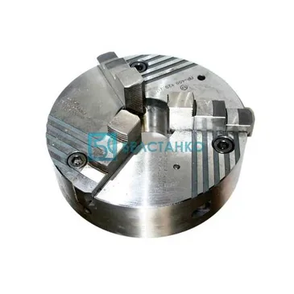
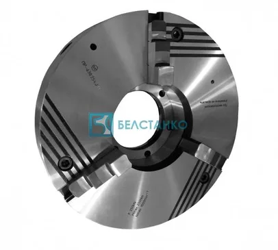

3-315.11.34Патрон токарный самоцентрирующий трёхкулачковый 315 мм. с креплением через переходной фланец по ГОСТ 388953 000 ₽Сравнить
3-315.39.34Патрон токарный самоцентрирующий трёхкулачковый 315 мм. с креплением через поворотную шайбу по ГОСТ 12593 (DIN 55027)64 000 ₽Сравнить
3-315.41.34Патрон токарный самоцентрирующий трёхкулачковый 315 мм. с креплением через поворотную шайбу по ГОСТ 12593 (DIN 55027)53 000 ₽Сравнить
3-315.55.34Патрон токарный самоцентрирующий трёхкулачковый 315 мм. с креплением через поворотную шайбу по ГОСТ 12593 (DIN 55027)69 000 ₽Сравнить
3-315.63.34Патрон токарный самоцентрирующий трёхкулачковый 315 мм. с креплением непосредственно на фланцевый конец шпинделя по ГОСТ 12595 (DIN 55026)76 000 ₽Сравнить
ПР-250.65.C210Патрон токарный клинореечный самоцентрирующий трёхкулачковый 250 мм. с креплением через переходной фланец по ГОСТ 3889103 560 ₽Сравнить
ПР-250.65.J6Патрон токарный клинореечный самоцентрирующий трёхкулачковый 250 мм. с креплением через поворотную шайбу по ГОСТ 12593 (DIN 55027)103 560 ₽Сравнить
ПР-250.65.K6Патрон токарный клинореечный самоцентрирующий трёхкулачковый 250 мм. с креплением непосредственно на фланцевый конец шпинделя по ГОСТ 12595 (DIN 55026)103 560 ₽Сравнить
ПР-400.120.J11Патрон токарный клинореечный самоцентрирующий трёхкулачковый 400 мм. с креплением через поворотную шайбу по ГОСТ 12593 (DIN 55027)194 640 ₽Сравнить
ПР-400.120.J8Патрон токарный клинореечный самоцентрирующий трёхкулачковый 400 мм. с креплением через поворотную шайбу по ГОСТ 12593 (DIN 55027)194 640 ₽Сравнить
ПР-400.120.К11Патрон токарный клинореечный самоцентрирующий трёхкулачковый 400 мм. с креплением непосредственно на фланцевый конец шпинделя по ГОСТ 12595 (DIN 55026)197 400 ₽Сравнить
ПР-400.120.С340Патрон токарный клинореечный самоцентрирующий трёхкулачковый 400 мм. с креплением через переходной фланец по ГОСТ 3889194 640 ₽Сравнить
ПР-500.180.J11Патрон токарный клинореечный самоцентрирующий трёхкулачковый 500 мм. с креплением через поворотную шайбу по ГОСТ 12593 (DIN 55027)384 000 ₽Сравнить
ПР-500.180.J15Патрон токарный клинореечный самоцентрирующий трёхкулачковый 500 мм. с креплением через поворотную шайбу по ГОСТ 12593 (DIN 55027)384 000 ₽Сравнить
ПР-500.180.J8Патрон токарный клинореечный самоцентрирующий трёхкулачковый 500 мм. с креплением через поворотную шайбу по ГОСТ 12593 (DIN 55027)384 000 ₽Сравнить
ПР-500.180.К11Патрон токарный клинореечный самоцентрирующий трёхкулачковый 500 мм. с креплением непосредственно на фланцевый конец шпинделя по ГОСТ 12595 (DIN 55026)405 600 ₽Сравнить
ПР-500.180.К15Патрон токарный клинореечный самоцентрирующий трёхкулачковый 500 мм. с креплением непосредственно на фланцевый конец шпинделя по ГОСТ 12595 (DIN 55026)405 600 ₽Сравнить
ПР-500.180.К8Патрон токарный клинореечный самоцентрирующий трёхкулачковый 500 мм. с креплением непосредственно на фланцевый конец шпинделя по ГОСТ 12595 (DIN 55026)405 600 ₽Сравнить
ПР-500.180.С420Патрон токарный клинореечный самоцентрирующий трёхкулачковый 500 мм. с креплением через переходной фланец по DIN6350384 000 ₽Сравнить
ПР-500.180.С440Патрон токарный клинореечный самоцентрирующий трёхкулачковый 500 мм. с креплением через переходной фланец по ГОСТ 3889384 000 ₽Сравнить
ПР-630.254.J11Патрон токарный клинореечный самоцентрирующий трёхкулачковый 630 мм. с креплением через поворотную шайбу по ГОСТ 12593 (DIN 55027)561 600 ₽Сравнить
ПР-630.254.J15Патрон токарный клинореечный самоцентрирующий трёхкулачковый 630 мм. с креплением через поворотную шайбу по ГОСТ 12593 (DIN 55027)561 600 ₽Сравнить
ПР-630.254.К11Патрон токарный клинореечный самоцентрирующий трёхкулачковый 630 мм. с креплением непосредственно на фланцевый конец шпинделя по ГОСТ 12595 (DIN 55026)561 600 ₽Сравнить
ПР-630.254.К15Патрон токарный клинореечный самоцентрирующий трёхкулачковый 630 мм. с креплением непосредственно на фланцевый конец шпинделя по ГОСТ 12595 (DIN 55026)561 600 ₽Сравнить